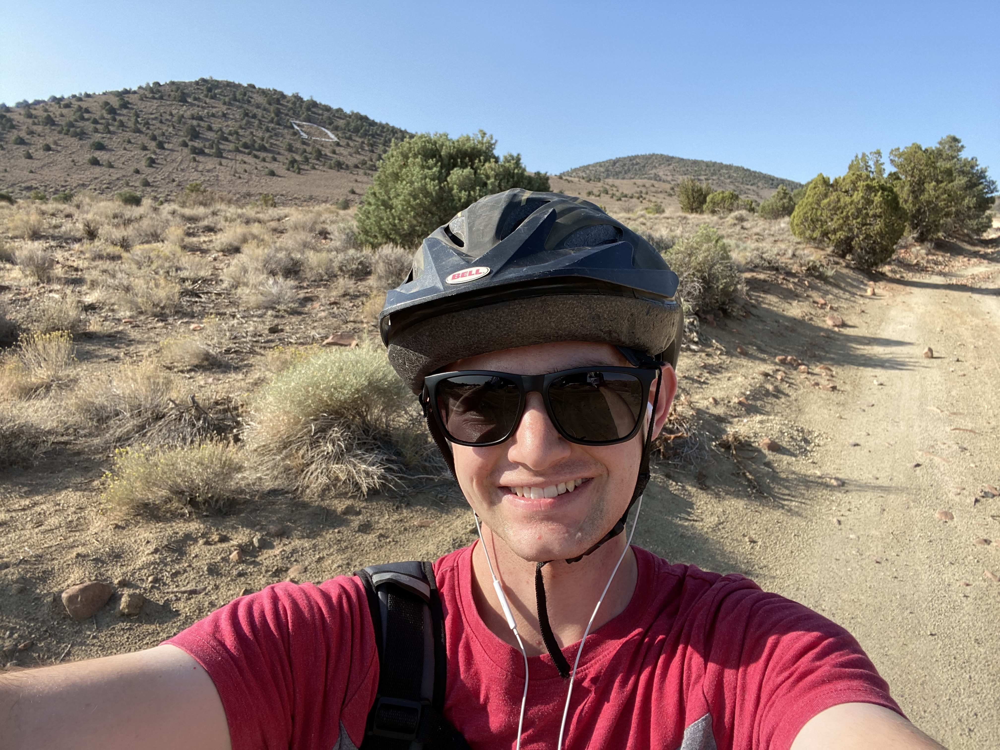
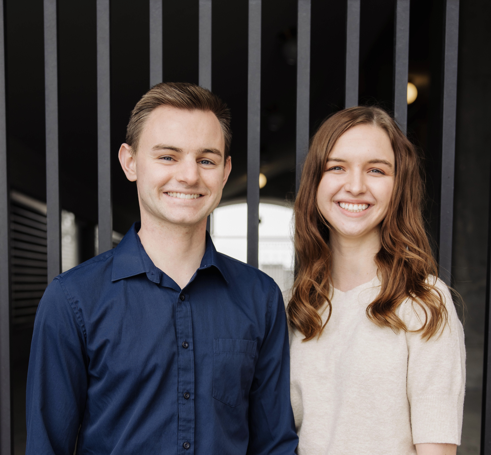

Hey everybody, I'm Kobey! I'm currently a Mechanical Engineering student at Brigham Young University, minoring in Computer Science. My wife, Kelsie, and I have lived in Provo, UT for a couple years now. We both love to go for nature walks, watch movie marathons, and try new and exotic restaurants!
Right now I am working as a Research Assistant in the BYU Economics Department (BYU Record Linking Lab). I develop webscrapers in python code to extract information for one of the world's largest geneological databases. Each day brings a new challenge to solve; I love what I do!


I'm an avid mountain biker, and love to get outdoors. Last year I ran the St. George Marathon, which was an unforgettable experience. I'm also a nerd for anything Star Wars or Marvel - although some movies are decidedly better than others!
What gets me out of bed in the morning? I'm passionate about family, and my dedication to them and God motivates me to do what I do. I love learning new things, from mastering a new language to growing bonsai trees to playing piano. As Pablo Picasso said, "I am always doing that which I cannot do, in order that I may learn how to do it."